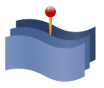

Toponymy

Getting Started:
Introduction to Toponymy
Installation
Getting Started with Toponymy
Parameters and Options
Getting More out of Toponymy:
How Toponymy Works
Clusterers for Toponymy
Clusterer Options
Keyphrase extractors
Exemplar Text Selection
LLM Wrappers
Embedding Wrappers
Cluster_layers
Sundries:
Toponymy API Reference
Toponymy
Index
Index
A
|
C
|
E
|
F
|
H
|
K
|
L
|
M
|
N
|
O
|
S
|
T
A
AnthropicEmbedder (class in toponymy.embedding_wrappers)
AnthropicNamer (class in toponymy.llm_wrappers)
AzureAIEmbedder (class in toponymy.embedding_wrappers)
AzureAINamer (class in toponymy.llm_wrappers)
C
ClusterLayerText (class in toponymy)
CohereEmbedder (class in toponymy.embedding_wrappers)
CohereNamer (class in toponymy.llm_wrappers)
E
encode() (toponymy.embedding_wrappers.AnthropicEmbedder method)
(toponymy.embedding_wrappers.AzureAIEmbedder method)
(toponymy.embedding_wrappers.CohereEmbedder method)
(toponymy.embedding_wrappers.OpenAIEmbedder method)
F
fit() (toponymy.KeyphraseBuilder method)
(toponymy.Toponymy method)
(toponymy.ToponymyClusterer method)
fit_predict() (toponymy.Toponymy method)
(toponymy.ToponymyClusterer method)
fit_transform() (toponymy.KeyphraseBuilder method)
H
HuggingFaceNamer (class in toponymy.llm_wrappers)
K
KeyphraseBuilder (class in toponymy)
L
LlamaCppNamer (class in toponymy.llm_wrappers)
M
make_exemplar_texts() (toponymy.ClusterLayerText method)
make_keyphrases() (toponymy.ClusterLayerText method)
make_prompts() (toponymy.ClusterLayerText method)
make_subtopics() (toponymy.ClusterLayerText method)
make_topic_name_vector() (toponymy.ClusterLayerText method)
N
name_topics() (toponymy.ClusterLayerText method)
O
OpenAIEmbedder (class in toponymy.embedding_wrappers)
OpenAINamer (class in toponymy.llm_wrappers)
S
supports_system_prompts (toponymy.llm_wrappers.LlamaCppNamer property)
T
topic_tree_ (toponymy.Toponymy property)
Toponymy (class in toponymy)
ToponymyClusterer (class in toponymy)